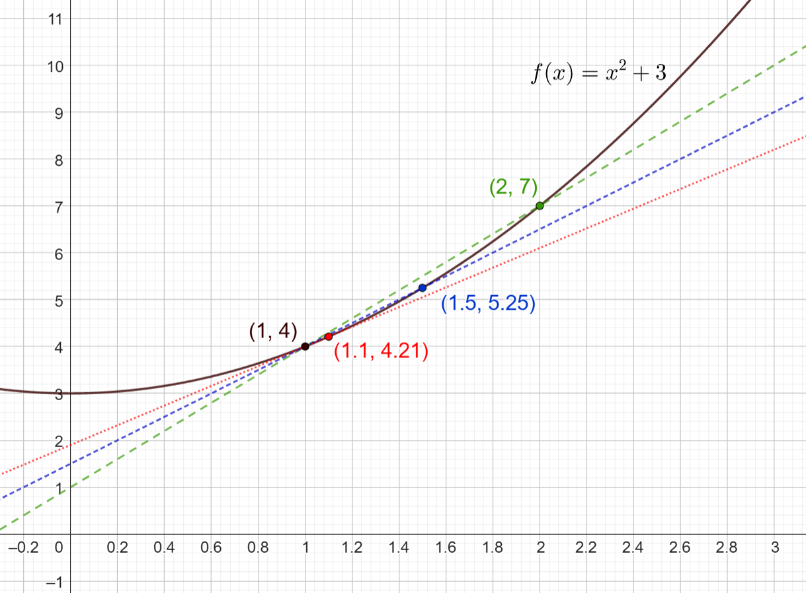

Derivaatan käsite
Contents
Derivaatan käsite#
Suuri osa tästä opintojaksosta koostuu funktioiden kasvunopeuden eli derivaatan määrittelystä ja soveltamisesta. Funktion derivaatta on määritelty raja-arvona murtolausekkeesta, jossa osoittajana on funktion arvojen erotus ja nimittäjänä muuttujan arvojen erotus. Raja-arvo lasketaan tilanteessa, jossa muuttujan arvojen erotus lähestyy nollaa. Graafisesti tarkasteltuna derivaatta tarkoittaisi seuraavaa: jos funktion kuvaajalle piirretään yhtä pistettä sivuava suora, niin derivaatta kyseisessä pisteessä on suoran kulmakerroin.
Erotusosamäärä ja sen raja-arvo#
Tarkastellaan jatkuvaa funktiota \(f(x)\). Sen arvo muuttujan arvolla \(x\) on luonnollisesti \(f(x)\). Kun muuttujan arvoa kasvatetaan (tai pienennetään) hyvin pienen muutoksen \(\Delta x\) verran arvoon \(x+\Delta x\), niin funktio saa jonkin arvon \(f(x+\Delta x)\).
Funktion arvon ja muuttujan arvon muutoksen suhde voidaan kirjoittaa:
\(\frac{f(x+\Delta x)-f(x)}{(x+\Delta x)-x} = \frac{f(x+\Delta x)-f(x)}{x+\Delta x -x} = \frac{f(x+\Delta x)-f(x)}{\Delta x}\)
Edellistä lauseketta sanotaan funktion erotusosamääräksi.
Lasketaan esimerkin vuoksi muutama erotusosamäärä funktiolle \(f(x)=x^2+3\) siten, että tarkoituksen on selvittää funktion muutosnopeus kohdassa \(x=1\). Funktion arvo kyseisessä pisteessä on \(f(1)=1^2+3=4\). Lasketaan erotusosamäärä eli kulmakerroin sellaiselle suoralle, jonka toinen piste on \((1,4)\) ja toiselle pisteelle on kolme eri vaihtoehtoa:
Piste \((x,f(x)\) |
Erotusosamäärä |
|---|---|
(\(2, f(2))=(2,7)\) |
\(\frac{f(x+\Delta x)-f(x)}{\Delta x}=\frac{7-4}{2-1}=3\) |
(\(1.5, f(1.5))=(1.5,5.25)\) |
\(\frac{f(x+\Delta x)-f(x)}{\Delta x}=\frac{5.25-4}{1.5-1}=2.5\) |
(\(1.1, f(1.1))=(1.1,4.21)\) |
\(\frac{f(x+\Delta x)-f(x)}{\Delta x}=\frac{4.21-4}{1.1-1}=2.1\) |
Kuvassa on esitetty pisteen \((1,4)\) ja näiden eri pisteiden kautta piirretyt suorat eri väreillä ja erilaisilla viivoilla. Huomataan, että erotusosamäärän arvo eli suoran kulmakerroin muuttuu, kun pisteet lähenevät toisiaan. Tavoite eli pistettä sivuava suora tarkoittaisi sellaista suoraa, jonka toinen piste olisi mitättömän pienen (differentiaalisen) etäisyyden päässä pisteestä \((1,4)\).

Funktion muutosnopeus missä tahansa funktion määrittelyjoukkoon kuuluvassa pisteessä \(x\) saadaan yleisestikin erotusosamäärän raja-arvona, kun muuttujien etäisyys \(\Delta x\) kutistetaan nollaan. Tätä erotusosamäärän raja-arvoa nimitetään funktion derivaataksi ja sen laskemista funktion derivoinniksi. Derivaattaa merkitään tavallisimman heittomerkillä: funktion \(f(x)\) derivaatta on \(f'(x)\). Muita yleisiä merkintätapoja ovat \(D f(x)\) ja \(\frac{\text{d}f}{\text{d}x}\). Käyttämällä derivaatalle merkintää \(f'(x)\) voidaan kirjoittaa funktion $f(x) derivaatalle laskukaava seuraavasti:
\(f'(x) = \lim_{\Delta x \to 0} \frac{f(x+\Delta x)-f(x)}{\Delta x}\)
Edellisen esimerkin funktiolle erotusosamäärän raja-arvo on
\(\begin{align} & f'(x) = \lim_{\Delta x \to 0} \frac{(x+\Delta x)^2+3-(x^2+3)}{\Delta x} = \lim_{\Delta x \to 0} \frac{(x+\Delta x)(x+\Delta x)+3-x^2-3} {\Delta x} \\ & = \lim_{\Delta x \to 0} \frac{x^2+2 x \Delta x + (\Delta x)^2-x^2}{\Delta x} = \lim_{\Delta x \to 0} \frac{2 x \Delta x + (\Delta x)^2}{\Delta x} \\ & = \lim_{\Delta x \to 0} \frac{\Delta x (2 x + \Delta x)}{\Delta x} = \lim_{\Delta x \to 0} 2 x + \Delta x = 2x \end{align}\)
Huomautus
Ihan kaikille funktiolle \(f(x)\) ei ole mahdollista laskea derivaattaa. Funktion pitää olla jatkuva ja derivoituva eli siinä ei saa katkoskohtia eikä “kulmia”. Tässä materiaalissa ei tarkastella tämän tarkemmin, mitä funktioita voi derivoida ja mitä ei, vaan keskitytään sellaisiin funktioihin, joille voi laskea derivaatan funktioiden määrittelyjoukkoon kuuluvilla luvuilla.
Esimerkki
Määritä funktion \(f(x)=x^2+3x\) derivaattafunktio \(f'(x)\).
Ratkaisu
Muodostetaan erotusosamäärän raja-arvo:
\(f'(x) = \lim_{\Delta x \to 0} \frac{((x+\Delta x)^2+3(x+\Delta x))-(x^2+3x)}{\Delta x}\)
Sievennetään osoittajaa avaamalla potenssilaskun sulut ja vähennyslaskun sulut:
\(f'(x) = \lim_{\Delta x \to 0} \frac{x^2+2x\Delta x+(\Delta x)^2+3x+3\Delta x -x^2-3x}{\Delta x} = \lim_{\Delta x \to 0} \frac{(\Delta x)^2+2x\Delta x+3\Delta x}{\Delta x}\)
Luvun \(\Delta x\) paikalle ei voida suoraan sijoittaa lukua 0, sillä tällöin murtolausekkeen nimittäjäksi tulisi nolla. Voidaan kuitenkin supistaa murtolauseke luvulla \(\Delta x\):
\(\frac{(\Delta x)^2+2x\Delta x+3\Delta x}{\Delta x} = \frac{\Delta x+2x+3}{1} = \Delta x + 2x +3\)
Nyt voidaan laskea raja-arvo:
\(f'(x) = \lim_{\Delta x \to 0} \Delta x + 2x +3 = 2x+3\).
Funktion derivaatta on siis \(f'(x)=2x+3\). Funktion muutosnopeus missä tahansa määrittelyjoukon pisteessä \(x\) saadaan sijoittamalla tähän lausekkeeseen haluttu muuttujan arvo. Esimerkiksi pisteessä \(x=1\) funktion \(f(x)\) muutosnopeus on \(f'(1)=2\cdot 1 +3 = 5\).